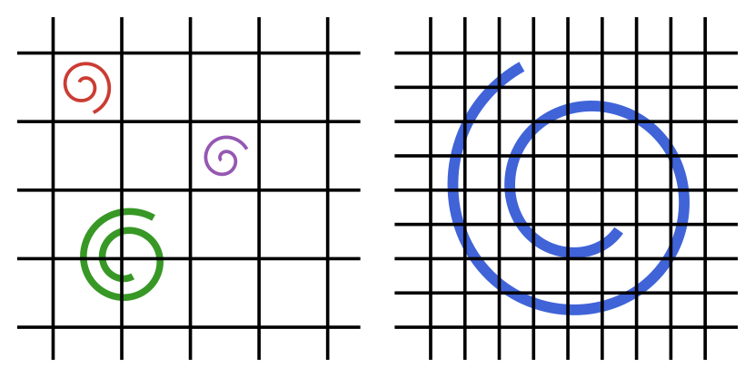

Large eddy simulation
Depending on the problem specification, a given grid resolution may not be sufficient to resolve all spatial features of the flow. Consider the following example:

On the left, the grid spacing is too large to capt the smallest eddies in the flow. These eddies create sub-grid stresses that also affect the large scale features. The grid must be refined if we want to compute these stresses exactly.
On the right, the smallest spatial feature of the flow is fully resolved, and there are no sub-grid stresses. The equations can be solved without worrying about errors from unresolved features. This is known as Direct Numerical Simulation (DNS).
If refining the grid is too costly, a closure model can be used to predict the sub-grid stresses. The models only give an estimate for these stresses, and may need to be calibrated to the given problem. When used correctly, they can predict the evolution of the large fluid motions without computing the sub-grid motions themselves. This is known as Large Eddy Simulation (LES).
Eddy viscosity models add a local contribution to the global baseline viscosity. The baseline viscosity models transfer of energy from resolved to atomic scales. The new turbulent viscosity on the other hand, models energy transfer from resolved to unresolved scales. This non-constant field is computed from the local velocity field.
The following eddy viscosity models are available:
In addition, the default LaminarModel assumes that there are no sub-grid stresses. It can be used if the grid is sufficiently refined for the given flow. It has the advantage of having a constant diffusion operator.